Quick path: build the lab step by step
You'll build a small Kubernetes cluster on your laptop, run the Campus Portal in it and attack it twice. On the flat network 5 of 5 attack steps work. After micro-segmentation only 1 of 5 does. Plan on 2 to 3 days, mostly waiting for downloads.
- A block with a blue bar goes into PowerShell. Paste with Ctrl+V.
- A block with a purple bar goes into the Ubuntu terminal. Paste with Ctrl+Shift+V.
- A block labelled Output shows what the screen prints. Never paste it.
- Paste one block, press Enter and wait for the prompt to come back.
- Tick Done when your screen matches. The ticks stay saved in this browser.
- If your screen doesn't match, open "Not what you see?" under the step.
- The drawings show only the part of the screen a step uses. The numbers in them match the numbered actions.

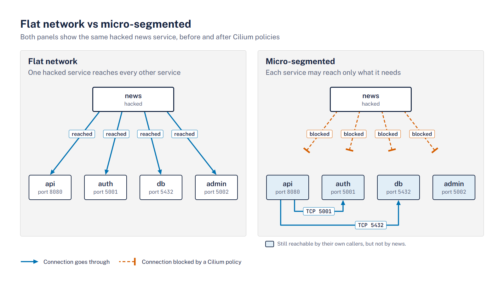
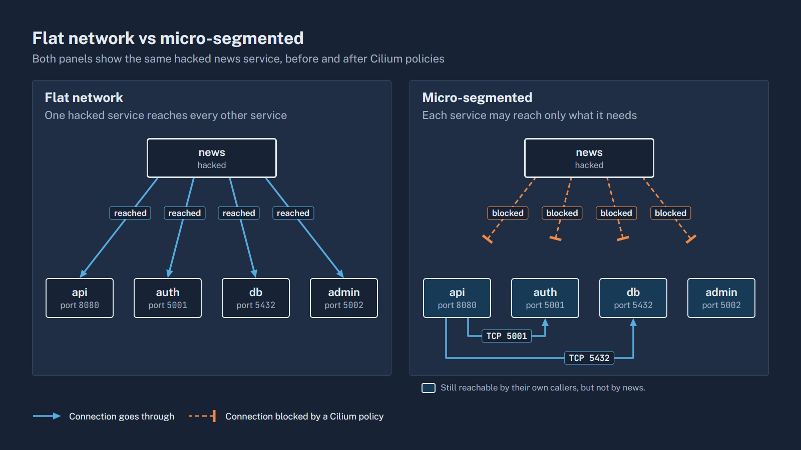
0 of 44 steps done Next step: 1.1 Check that virtualization is on
Stage 1. Prepare Windows

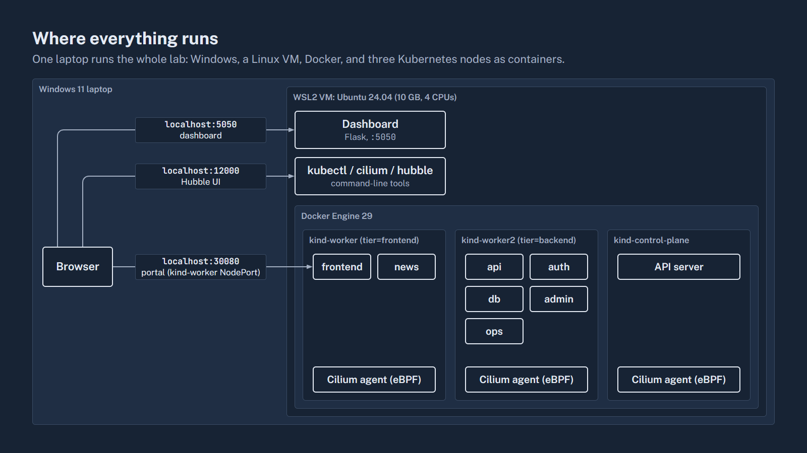
1.1 Check that virtualization is on
- Press Ctrl+Shift+Esc. In Task Manager, click Performance.
- Click CPU.
- Read the Virtualization line under the graph.

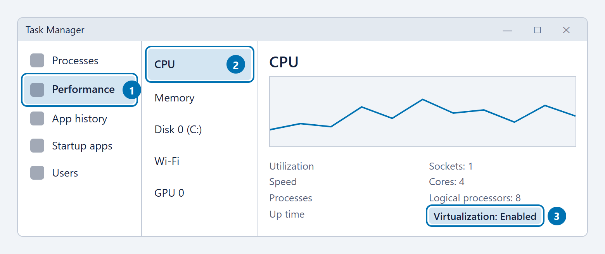
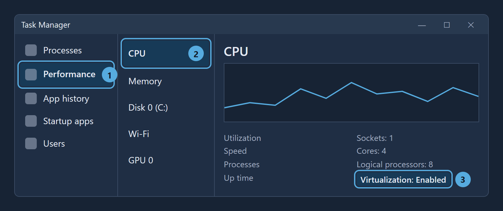
You should see: Virtualization: Enabled
Not what you see?
It reads Disabled. Switch it on in the laptop's firmware (BIOS) settings before you go on. Full guide: chapter 2, "Step 1. Check that virtualization is on".
1.2 Update WSL
WSL is the part of Windows that runs Ubuntu.
- Press the Windows key and type
powershell. - Right-click Windows PowerShell and choose Run as administrator.
- Click Yes, then paste the block.

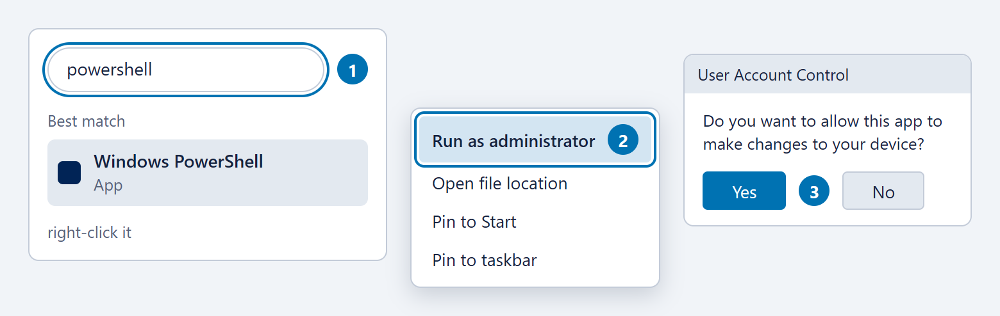
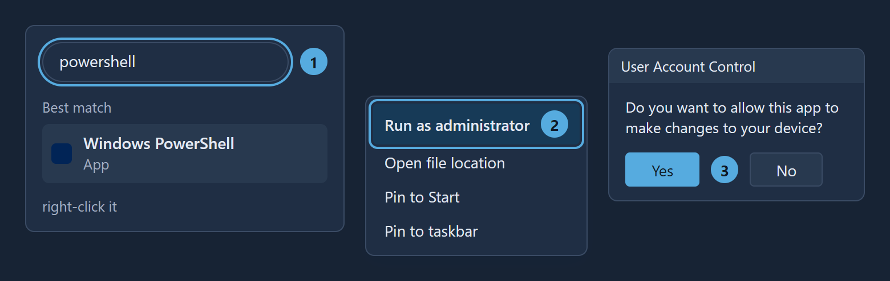
wsl --update
wsl --versionYou should see: WSL version: 3.0.5.0 or a higher number on the first line.
Not what you see?
Invalid command line option: --version means the old WSL is still running. Run wsl --update again and restart Windows. If the update sits at 0% for more than ten minutes, press Ctrl+C and run wsl --update --web-download. Full guide: chapter 2, "Step 2. Update WSL".
1.3 Extract the project files
- Get
microseg-ready-files.zipfrom the Downloads page and save it in your Downloads folder. - Right-click the file and choose Extract All.
- Keep the folder Windows suggests and click Extract.

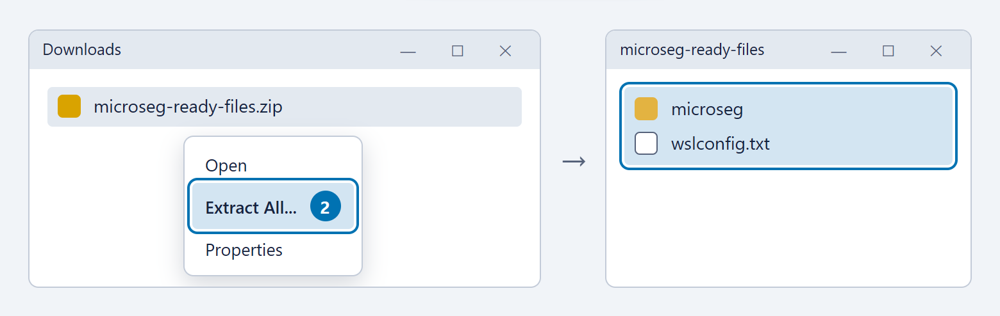
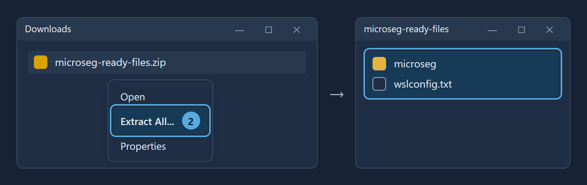
You should see: a folder named microseg-ready-files that holds a folder microseg and a file wslconfig.txt.
Not what you see?
Extract the zip again into Downloads\microseg-ready-files. The next steps read the files from there.
1.4 Copy the WSL settings file
This gives WSL 10 GB of memory and 4 processors. Use the same administrator window.
Copy-Item "$env:USERPROFILE\Downloads\microseg-ready-files\wslconfig.txt" "$env:USERPROFILE\.wslconfig"
wsl --shutdown
Get-Content "$env:USERPROFILE\.wslconfig"You should see: the settings printed line by line, with memory=10GB on the second line.
Not what you see?
Cannot find path means the zip isn't where step 1.3 puts it. Fix that and run the block again. Full guide: chapter 3, "Give WSL 10 GB of memory and the kernel modules Cilium needs".
1.5 Install Ubuntu and create your Linux user
Paste the block in the same administrator window. Ubuntu then asks three things.
wsl --install -d Ubuntu-24.04- Type a user name in lowercase letters, for example
sara, and press Enter. - Type a password and press Enter. Nothing shows while you type, not even dots.
- Type the same password again and press Enter.

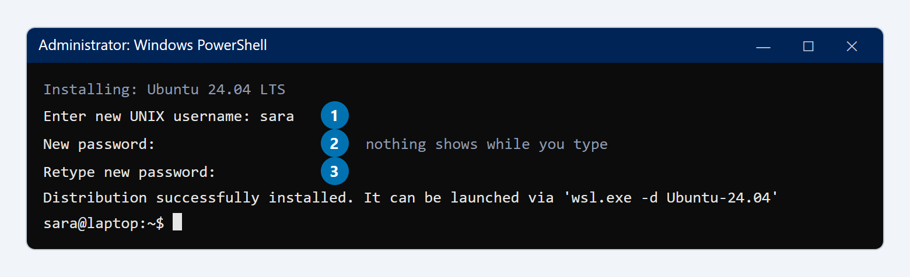
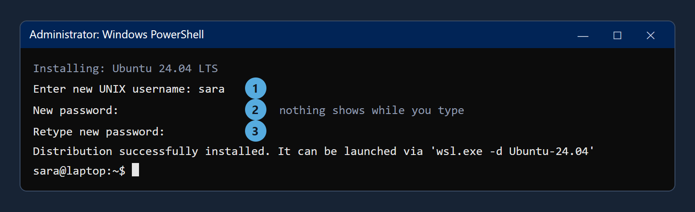
You should see: Distribution successfully installed, then a prompt ending in $. Type exit, press Enter and close the window.
Not what you see?
Changes will not be effective until the system is rebooted means Windows needs a restart. Restart and run the same command again. Sorry, passwords do not match means the two passwords differed, so type y and enter it twice more. An error with 0x80370102 means virtualization is off, so go back to step 1.1. Full guide: chapter 2, "Step 3. Install Ubuntu 24.04 and create your Linux user".
Stage 2. Copy the project into Ubuntu and install the tools
2.1 Open Ubuntu and find your Windows user name
- Press the Windows key and type
ubuntu. - Click the result with 24.04 in its name. This is your main Ubuntu window from now on.
- Paste the block.

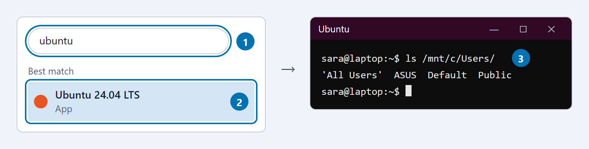
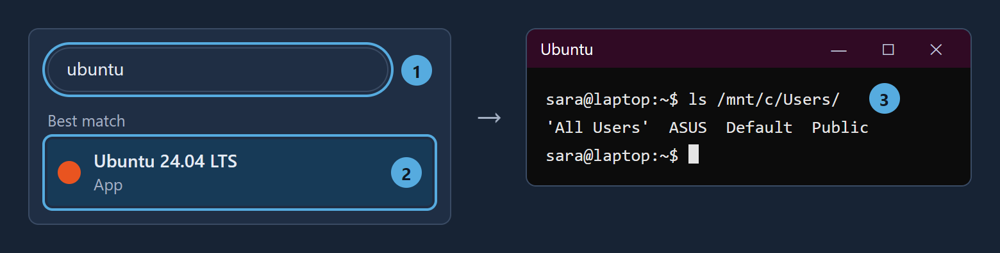
ls /mnt/c/Users/You should see: a few folder names. One of them is yours, such as ASUS. Write it down. Names such as Public, Default and 'All Users' belong to Windows.
Not what you see?
When no Ubuntu result shows in the Start menu, open an ordinary PowerShell window and run wsl -d Ubuntu-24.04 --cd ~. Full guide: chapter 2, "Step 4. Open the Ubuntu terminal".
2.2 Copy the project into Ubuntu
The block contains <WinUser>. Replace it, angle brackets included, with the name from step 2.1. Paste the block into Notepad, change the name there, then copy it from Notepad.

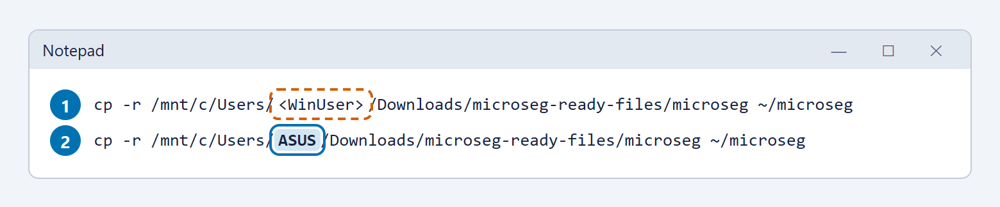
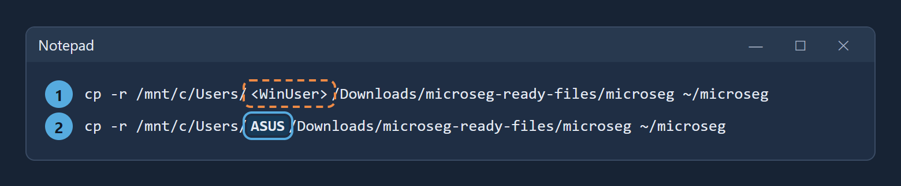
cp -r /mnt/c/Users/<WinUser>/Downloads/microseg-ready-files/microseg ~/microseg
cd ~/microsegYou should see: the prompt now ends in ~/microseg$.
Not what you see?
WinUser: No such file or directory means <WinUser> is still in the command. cp: cannot stat means the name is spelled differently from the list in step 2.1. Full guide: chapter 2, "Step 7. Move a file from Windows into Ubuntu".
2.3 Install the tools
This installs Docker, kind, kubectl, cilium and hubble. It takes 5 to 10 minutes. When it shows [sudo] password for, type your Ubuntu password and press Enter. Nothing shows while you type.
bash install-tools.shYou should see: a last line that starts with DONE. Now close this Ubuntu window.
Not what you see?
The last line starting with == names the part that failed. Run bash install-tools.sh again. It's safe to repeat. If the same part fails twice, chapter 3 of the full guide has a step for each part: "Raise the inotify limits for kind's nodes" for part 1, "Install curl, jq and python3-venv" for part 2, "Add Docker's package repository" and "Install Docker Engine 29" for part 3, "Install kind (v0.33.0)" and "Install kubectl (v1.36.6)" for part 4, "Install the cilium command (v0.20.3)" and "Install the hubble command (v1.20.4)" for part 5, and "Create the Python virtual environment (.venv)" for part 6.
2.4 Restart Ubuntu
Close every Ubuntu window. Open an ordinary PowerShell window, not as administrator, and paste the block.
wsl --terminate Ubuntu-24.04You should see: The operation completed successfully. Then open Ubuntu again as in step 2.1.
Not what you see?
Run wsl -l -v and check that the list has a row named Ubuntu-24.04. Full guide: chapter 3, "Let your user run Docker (no sudo)".
2.5 Check the free space on drive C
df -h /mnt/cYou should see: 15G or more in the Avail column.
Not what you see?
Empty the Recycle Bin and delete large files you no longer need from Downloads. Then run the command again. Full guide: chapter 3, "Check the free space on drive C:".
2.6 Check the whole environment
This script tests everything you installed, one line per check.
bash ~/microseg/check-env.shYou should see: 14 of 14 checks passed on the last line.
Not what you see?
Look at each line that starts with FAIL. For the memory, CPU and kernel-module checks, repeat step 1.4, then open Ubuntu again and rerun the script. A FAIL on docker works without sudo means step 2.4 still has to happen. Full guide: chapter 3, "Check the whole environment (check-env.sh)", which has a table naming the step to repeat for every FAIL line.
Stage 3. Create the cluster
3.1 Run the setup script
This creates the cluster and installs Cilium and Hubble. It takes 6 to 15 minutes. Red lines such as Cilium: 1 errors, 3 warnings are normal while it waits. Leave it alone until the prompt comes back.
cd ~/microseg && bash setup.shYou should see: a node list at the end in which kind-control-plane, kind-worker and kind-worker2 all show Ready.
Not what you see?
node(s) already exist for a cluster with the name "kind" or port is already allocated means an old cluster is in the way. Run kind delete cluster, then bash setup.sh again. If it stops after 15 minutes with fatal error: all goroutines are asleep - deadlock!, Cilium's images are still downloading, so don't delete the cluster. Full guide: chapter 4, "Run setup.sh".
3.2 Check the nodes and their tiers
kubectl get nodes -L tierYou should see: all three nodes Ready, with frontend in the TIER column for kind-worker and backend for kind-worker2.
NAME STATUS ROLES AGE VERSION TIER
kind-control-plane Ready control-plane 5m14s v1.36.4
kind-worker Ready <none> 5m v1.36.4 frontend
kind-worker2 Ready <none> 5m v1.36.4 backendNot what you see?
A node that says NotReady needs another two minutes, so wait and run the command again. The connection to the server localhost:8080 was refused means setup.sh never finished. Full guide: chapter 4, "Check the nodes and their tier labels (kubectl get nodes)".
3.3 Check Cilium
cilium statusYou should see: four lines at the top that each end in OK.
/¯¯\__/¯¯\ Cilium: OK
\__/¯¯\__/ Operator: OK
/¯¯\__/¯¯\ Envoy DaemonSet: OK
\__/¯¯\__/ Hubble Relay: OKNot what you see?
Wait two minutes and run it again. Full guide: chapter 4, "Check Cilium's health and the cluster DNS address".
Stage 4. Deploy the portal

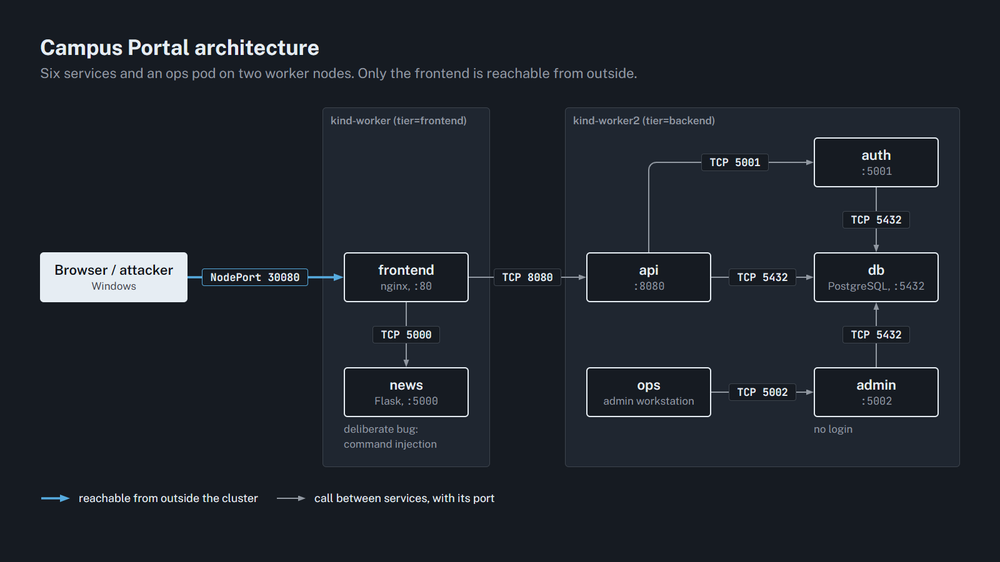
4.1 Run the deploy script
This builds the portal and starts its seven pods. It takes a few minutes.
cd ~/microseg && bash deploy.shYou should see: a table of seven pods at the end, each 1/1 and Running.
Not what you see?
ERROR: no nodes found for cluster "kind" means the cluster is gone, so run bash setup.sh first. error: timed out waiting for the condition ends with the name of a pod that didn't start, and step 4.2 shows its status. Full guide: chapter 6, "Step 5. Deploy the portal".
4.2 Look at the pods
kubectl -n campus get podsYou should see: seven pods, every one 1/1 and Running. The endings of the names differ on your laptop.
NAME READY STATUS RESTARTS AGE
admin-766cddb668-gr2k8 1/1 Running 0 22s
api-65c5c7d5fd-2qtsk 1/1 Running 0 22s
auth-7fd575594b-2q5bd 1/1 Running 0 22s
db-d7c884fbf-9jdvd 1/1 Running 0 22s
frontend-6d755c977c-rzsg7 1/1 Running 0 22s
news-545758c8c6-2jp4n 1/1 Running 0 22s
ops-56f8b77f6d-hs2zr 1/1 Running 0 22sNot what you see?
ErrImageNeverPull in the STATUS column means the images aren't in the cluster, so run bash ~/microseg/deploy.sh again. A pod that stays Pending usually means a node lost its tier label. Full guide: chapter 6, "Step 6. Look at the pods".
4.3 Check that the portal works
This script logs in as a student and tests six things the portal must do.
bash ~/microseg/check-portal.shYou should see: PORTAL: 6/6 OK on the last line.
Not what you see?
FAIL portal page loads (expected '200', got '000') means nothing answered on port 30080, so check that the frontend pod is 1/1 Running. Full guide: chapter 6, "Step 8. Write check-portal.sh".
4.4 Reach the portal from Windows
Use an ordinary PowerShell window. Keep the .exe in curl.exe.
curl.exe -s -o NUL -w "%{http_code}\n" http://localhost:30080/You should see: 200
Not what you see?
000 while step 4.3 passes means WSL isn't passing the port on to Windows. Run wsl --shutdown, open Ubuntu again, wait until step 4.2 shows seven pods 1/1 Running, and try again. A red error starting with Invoke-WebRequest means the .exe was left off. Full guide: chapter 6, "Step 9. Open the portal from Windows".
4.5 Log in as Sara
- Open Edge or Chrome and go to
http://localhost:30080. - Type
saraas the username andsara2026as the password. - Click Log in.

You should see: Sara Ahmed's profile and two grades, 88 in Cloud Computing and 91 in Network Security.
Not what you see?
Login failed means the password didn't match. It's sara2026, all lowercase, and a password manager may have filled in something else. Full guide: chapter 6, "Step 9. Open the portal from Windows".
Stage 5. Start the dashboard and Hubble
The dashboard and Hubble each need an Ubuntu window of their own. Open two more windows as in step 2.1 and keep all three open while you work.

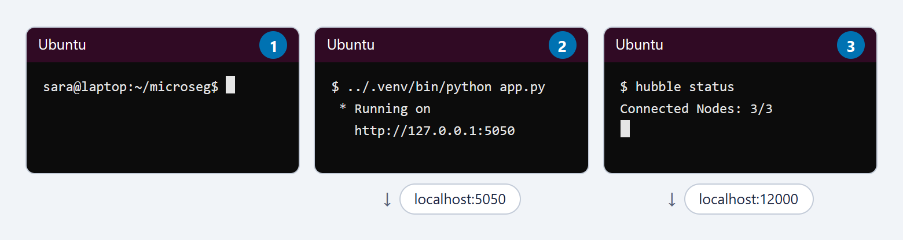
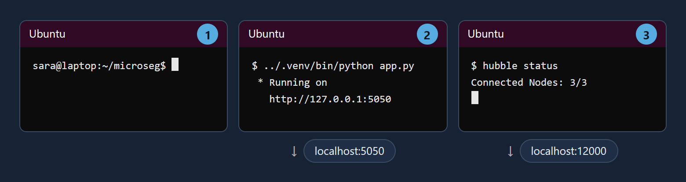
5.1 Start the dashboard
Paste this into the second window, the dashboard window.
cd ~/microseg/dashboard && ../.venv/bin/python app.pyYou should see: a line containing Running on http://127.0.0.1:5050, and no prompt after it. Leave this window open.
Not what you see?
Address already in use means a dashboard is already running in another window. Stop it there with Ctrl+C, then start it again. ModuleNotFoundError: No module named 'flask' means the command was typed differently, so copy it again. Full guide: chapter 7, "Step 3. Start the dashboard".
5.2 Connect to Hubble
Paste this into the third window, the Hubble window.
cilium hubble port-forward &
sleep 5
hubble statusYou should see: Connected Nodes: 3/3. A line such as [1] 2817 may come first.
Not what you see?
An error ending in connect: connection refused means the tunnel wasn't open yet. Wait a few seconds and run hubble status again. Full guide: chapter 4, "Connect the hubble command to Hubble Relay (port 4245)".
5.3 Start the Hubble UI
Paste this into the Hubble window too, under the output of step 5.2.
cilium hubble ui --open-browser=falseYou should see: the command keep running, with no prompt coming back. Leave this window open too.
Not what you see?
An error that mentions port 12000 means an older copy is already running. Run pkill -f "cilium hubble ui" in your main window, then run the command again here. Full guide: chapter 8, "Watch the attack on Hubble's service map".
5.4 Open the dashboard
Go to http://localhost:5050 in the Windows browser and wait a few seconds for the matrix to fill in.

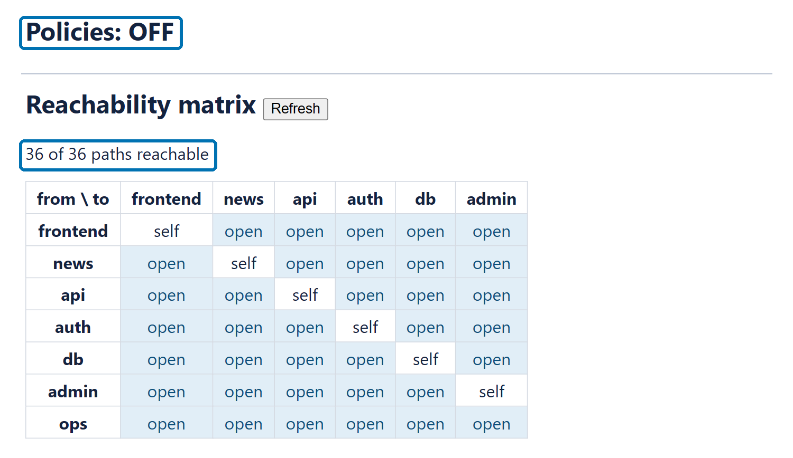
You should see: Policies: OFF at the top and 36 of 36 paths reachable above the matrix.
Not what you see?
When the browser can't reach the page, look at the dashboard window. If its prompt is back, start the dashboard again as in step 5.1. Fewer than 36 paths means a pod isn't ready or old policies are applied. Full guide: chapter 7, "Step 9. Open the dashboard" and "Step 6. Test the matrix route".
Stage 6. Attack the flat network
From here on, every Ubuntu command goes into your main window.
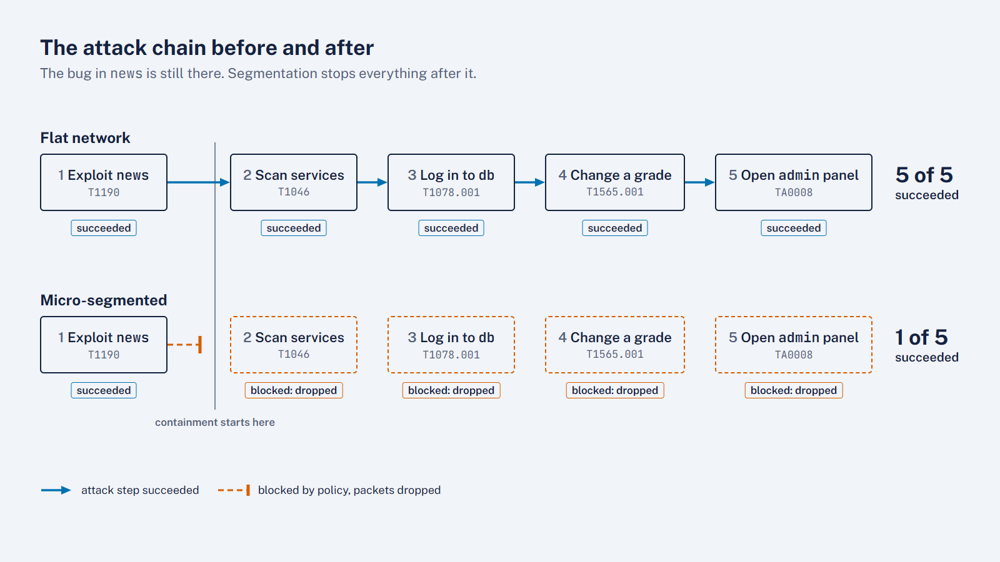

6.1 Run the attack from the dashboard
In the dashboard, find "Attack from the news pod" and click Run attack. It finishes in a few seconds.

You should see: 5 of 5 attack steps succeeded
Not what you see?
When every step failed and the log shows request failed, the dashboard can't reach the portal. Repeat step 4.3 and fix the portal first. Full guide: chapter 8, "Run all 5 steps from the dashboard".
6.2 Run step 1 by hand
This runs attack step 1 from Windows, the way an outside attacker would.
curl.exe -s http://localhost:30080/news/check-image --data-urlencode "url=x; id; hostname"You should see: uid=1000(app) gid=1000(app) groups=1000(app), followed by the news pod's name.
Not what you see?
No output at all means the portal isn't answering, so repeat step 4.4. If the only line is HTTP status of image: 000, the text inside the quotes isn't exactly url=x; id; hostname. Full guide: chapter 8, "Step 1. T1190, run a command inside news".
6.3 Check Omar's grade
Before the attack, Omar's Network Security grade was 58.
kubectl -n campus exec deploy/db -- psql -U postgres -d campus -c "SELECT * FROM grades WHERE id = 3"You should see: a row whose grade column reads 95.
3 | 2 | Network Security | 95Not what you see?
A grade of 58 means the attack didn't reach the database, so click Run attack again and repeat. container not found ("db") means the db pod is being replaced, so wait 20 seconds and try again. Full guide: chapter 8, "Run all 5 steps from the dashboard".
6.4 Take the screenshots for this stage
First make a folder for your screenshots.
New-Item -ItemType Directory -Force "$HOME\microseg-evidence"You should see: a short table whose Name column reads microseg-evidence.
Take every screenshot the same way.
- Press Windows+Shift+S and pick Full screen in the small toolbar at the top.
- Click the notification that appears.
- Press Ctrl+S, type
%USERPROFILE%\microseg-evidencein the address bar and press Enter. - Type the file name and click Save.

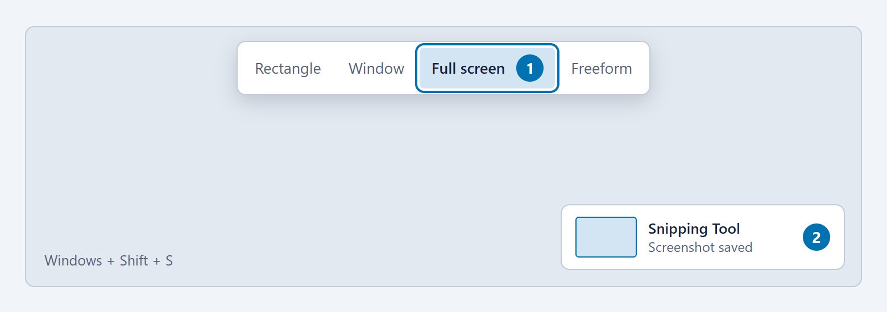
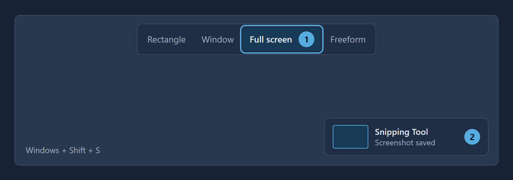
Take these two now.
E14-attack-flat, the dashboard showingPolicies: OFF,36 of 36 paths reachableand5 of 5 attack steps succeeded. Zoom out with Ctrl and the minus key until all three fit.E15-grade-after, your main Ubuntu window with the grade95from step 6.3.
Not what you see?
If no notification appears, Windows still saved the picture in Pictures > Screenshots. Rename it there and move it into microseg-evidence. Full guide: chapter 14, "Capture a terminal output".
Stage 7. Turn on micro-segmentation

7.1 Reset the database
This brings Omar's grade back to 58.
kubectl -n campus rollout restart deployment/db
kubectl -n campus rollout status deployment/db --timeout=120s
sleep 3
kubectl -n campus exec deploy/db -- psql -U postgres -d campus -c "SELECT * FROM grades WHERE id = 3"You should see: deployment "db" successfully rolled out, then the row with the grade 58.
Not what you see?
An error that starts with psql: error: connection to server on socket means PostgreSQL was still starting. Wait ten seconds and run the last line again on its own. Full guide: chapter 8, "Reset Omar's grade".
7.2 Apply the default-deny baseline
These three policies block everything except name lookups and health checks.
cd ~/microseg
kubectl apply -f k8s/policies/1-baseline.yamlYou should see: three lines ending in created, the first one ciliumnetworkpolicy.cilium.io/default-deny created.
Not what you see?
An error saying the path does not exist means the cd line didn't run, so paste both lines again. Lines ending in unchanged or configured are fine. Full guide: chapter 10, "Apply the baseline alone: 0 of 36".
7.3 See every path closed
Wait about ten seconds, then reload the dashboard with F5.
You should see: Policies: ON (3 policies) at the top and 0 of 36 paths reachable above the matrix.
Screenshot: save the dashboard as E19-baseline-only.
Not what you see?
If the matrix still shows 36, run kubectl -n campus get cnp. It must list three policies. Full guide: chapter 10, "Apply the baseline alone: 0 of 36".
7.4 Check that the portal is blocked too
This takes about half a minute, because every check waits for an answer that never comes.
bash ~/microseg/check-portal.shYou should see: PORTAL: 0/6 OK on the last line. That's expected, because everything is denied.
Not what you see?
PORTAL: 6/6 OK means more than the baseline is applied. Remove the extra policies with kubectl delete -f ~/microseg/k8s/policies/2-allow.yaml. Full guide: chapter 10, "Apply the baseline alone: 0 of 36".
7.5 Apply the per-workload policies
These seven policies reopen only the connections the portal needs.
cd ~/microseg
kubectl apply -f k8s/policies/2-allow.yaml
sleep 8
kubectl -n campus get cnpYou should see: seven created lines, then a table of 10 policies with True in the VALID column of every row.
Not what you see?
Fewer than 10 rows means one of the files isn't applied, so run step 7.2 and this step again. Full guide: chapter 10, "Apply 2-allow.yaml: 10 policies".
7.6 Check that the portal works again
bash ~/microseg/check-portal.shYou should see: PORTAL: 6/6 OK
Screenshot: save your main Ubuntu window as E20-portal-segmented.
Not what you see?
Run hubble observe --namespace campus --verdict DROPPED --last 20, which names the blocked connection. Full guide: chapter 10, "The portal works again: 6/6".
7.7 See only the designed paths open
Reload the dashboard with F5 and wait for the matrix.

You should see: Policies: ON (10 policies) and 7 of 36 paths reachable. The whole row for news is blocked.
Not what you see?
A count of 36 means the policies aren't in force. A count above 7 points at a leftover policy. In both cases kubectl -n campus get cnp must list exactly 10. Full guide: chapter 10, "The matrix: 7 of 36".
7.8 Run the attack again
Click Run attack in the dashboard. It takes about 18 seconds now, because each blocked step waits for its timeout.

You should see: 1 of 5 attack steps succeeded
Screenshot: save the dashboard as E23-attack-segmented, with Policies: ON (10 policies), 7 of 36 paths reachable and 1 of 5 attack steps succeeded all on the screen. Zoom out if they don't fit.

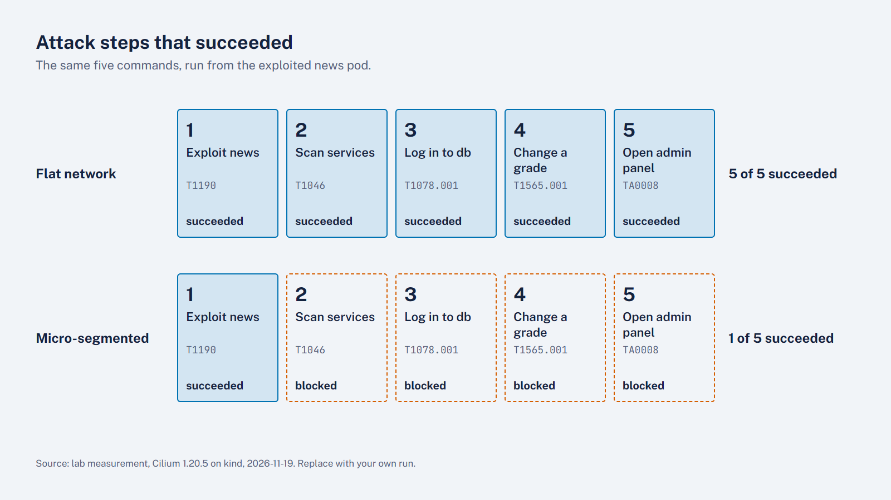
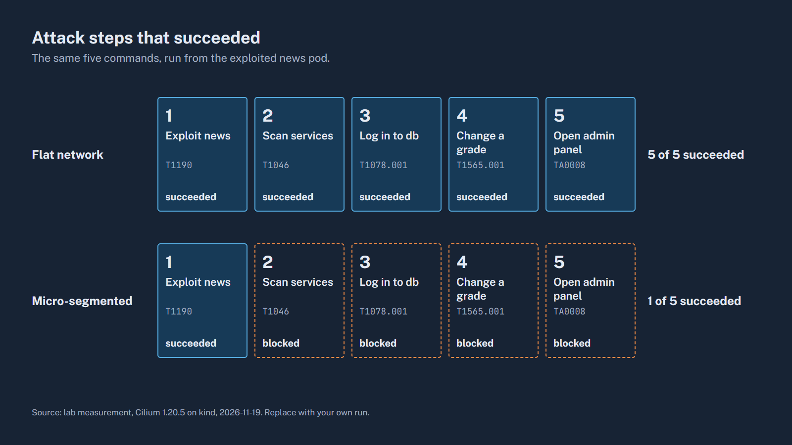
Not what you see?
5 of 5 means the policies are missing, so check kubectl -n campus get cnp. 0 of 5 means frontend can't reach news. Full guide: chapter 10, "Attack again: 1 of 5".
7.9 Try the forgotten export endpoint
On the flat network this address hands out every student's grades without a login.
curl.exe -s -i http://localhost:30080/api/exportYou should see: HTTP/1.1 403 Forbidden on the first line and Access denied at the end.
Screenshot: save the PowerShell window as E24-export-403.
Not what you see?
HTTP/1.1 200 OK means the HTTP rule in the api policy isn't in force. HTTP/1.1 504 Gateway Time-out means frontend can't reach api at all. Full guide: chapter 10, "The forgotten endpoint now answers 403".
Stage 8. Collect the evidence in Hubble

8.1 Make fresh traffic
Hubble keeps only recent connections. Click Run attack in the dashboard, wait for 1 of 5 attack steps succeeded, then paste the block.
bash ~/microseg/check-portal.shYou should see: PORTAL: 6/6 OK
Not what you see?
A FAIL line means a connection the portal needs is blocked. Full guide: chapter 11, "New traffic: the attack and the portal checks".
8.2 Read the drops from the news pod
Run this within a minute or two of step 8.1.
hubble observe --from-pod campus/news --verdict DROPPED --last 10You should see: lines that start with campus/news- after the time and end in Policy denied DROPPED. Your pod names and numbers differ.
Nov 19 20:43:39.887: campus/news-545758c8c6-2jp4n:55292 (ID:53922) <> campus/db-887596757-wzmtj:5432 (ID:13907) Policy denied DROPPED (TCP Flags: SYN)Screenshot: save your main Ubuntu window as E26-drops-from-news.
Not what you see?
No output means the attack has already aged out, so repeat step 8.1 and run this right after it. 4245: connect: connection refused means the Hubble window was closed, so run cilium hubble port-forward & again. Full guide: chapter 11, "Drops from the news pod, wide then narrow".
8.3 Compare news and api at the database
hubble observe --to-pod campus/db --last 12You should see: news lines ending in Policy denied DROPPED next to api lines ending in to-endpoint FORWARDED, all to the same db pod on port 5432.
Nov 19 20:43:45.283: campus/api-65c5c7d5fd-2qtsk:55286 (ID:6935) -> campus/db-887596757-wzmtj:5432 (ID:13907) to-endpoint FORWARDED (TCP Flags: SYN)Not what you see?
When every line says DROPPED, no allowed traffic reached db lately. Run bash ~/microseg/check-portal.sh and repeat the command. Full guide: chapter 11, "Same port, two identities".
8.4 Look at the Hubble UI
- Open
http://localhost:12000in the Windows browser and choosecampusas the namespace. - Type
pod=newsin the filter box at the top. - Click Run attack in the dashboard, then come back to this tab.

You should see: new rows in the table under the map, with news as the source and dropped in the Verdict column.
Screenshot: save the page as E30-hubble-map-segmented.
Not what you see?
When the page can't be reached, look at the Hubble window. If its prompt is back, run cilium hubble ui --open-browser=false there again. Full guide: chapter 11, "Hubble UI: the same flows as a map".
Stage 9. Measure
9.1 Run the latency test
This takes about 10 minutes. Plug the laptop in, close the dashboard and Hubble UI browser tabs, and leave the laptop alone until the prompt comes back.
cd ~/microseg && .venv/bin/python measure.pyYou should see: a summary at the end that starts with Mean of the run medians:. Your numbers differ from these, so write your own six lines down.
Mean of the run medians:
/news no-policies 2.66 ms (stdev 0.98)
/news policies 2.19 ms (stdev 0.28)
/news overhead -0.47 ms (-17.7 %)
/api/grades no-policies 29.08 ms (stdev 3.12)
/api/grades policies 32.23 ms (stdev 2.31)
/api/grades overhead 3.15 ms (10.8 %)Screenshot: save your main Ubuntu window as E31-measure.

Not what you see?
ModuleNotFoundError: No module named 'requests' means the command didn't start with .venv/bin/python. error: the path "k8s/policies/" does not exist means you weren't in ~/microseg. A 403 Client Error stops the run on purpose. Apply the policies with kubectl apply -f ~/microseg/k8s/policies/, repeat step 7.6, and run the test again. Full guide: chapter 12, "Run measure.py".
9.2 Check the results file and the policies
cd ~/microseg
wc -l results/latency.csv
kubectl -n campus get cnp --no-headers | wc -lYou should see: 21 results/latency.csv, then 10.
Not what you see?
No such file or directory means the test stopped before the end, so run step 9.1 again. A policy count of 0 means it stopped while the policies were removed, so run kubectl apply -f ~/microseg/k8s/policies/. Full guide: chapter 12, "The results file, row by row" and "Count the policies and L7 rules".
Before you write up the numbers, read chapter 12, "Noise: when a difference is real".
Stage 10. Save your results
10.1 Copy the results file to your evidence folder
Replace <WinUser> as in step 2.2.
cp ~/microseg/results/latency.csv /mnt/c/Users/<WinUser>/microseg-evidence/You should see: no output, and the prompt comes back.
Not what you see?
WinUser: No such file or directory means <WinUser> is still in the command. Full guide: chapter 14, "Copy the Windows captures across, into the project".
10.2 Check your evidence list
Get-ChildItem "$HOME\microseg-evidence" -NameYou should see: the ten names in this table.
| File | Taken in | What it shows |
|---|---|---|
E14-attack-flat.png |
step 6.4 | flat network, 36 of 36 paths and 5 of 5 attack steps |
E15-grade-after.png |
step 6.4 | Omar's grade changed to 95 |
E19-baseline-only.png |
step 7.3 | default deny alone, 0 of 36 paths |
E20-portal-segmented.png |
step 7.6 | PORTAL: 6/6 OK with micro-segmentation on |
E23-attack-segmented.png |
step 7.8 | 7 of 36 paths and 1 of 5 attack steps |
E24-export-403.png |
step 7.9 | /api/export refused with 403 Forbidden |
E26-drops-from-news.png |
step 8.2 | Hubble's Policy denied DROPPED lines |
E30-hubble-map-segmented.png |
step 8.4 | Hubble UI with news flows dropped |
E31-measure.png |
step 9.1 | latency with and without policies |
latency.csv |
step 10.1 | every latency run, 20 rows under a header |
Not what you see?
Retake a missing screenshot in the state the "Taken in" column names. Full guide: chapter 14, "The capture session, part by part".
When something goes wrong: symptoms and fixes
| What you see | What to do | Full guide |
|---|---|---|
| After a Windows restart, the portal, the dashboard or Hubble doesn't answer | Open Ubuntu and wait until kubectl -n campus get pods shows seven pods 1/1 Running. Then repeat stage 5. |
chapter 13, "After a Windows restart" |
permission denied together with /var/run/docker.sock |
Close every Ubuntu window, run wsl --terminate Ubuntu-24.04 in PowerShell and open Ubuntu again. |
chapter 3, "Let your user run Docker (no sudo)" |
check-env.sh fails the memory, CPU or kernel-module checks |
Check the file with Get-Content "$env:USERPROFILE\.wslconfig" in PowerShell, repeat step 1.4 if it's wrong, run wsl --shutdown and reopen Ubuntu. |
chapter 3, "Restart WSL, then check what it got" |
Read-only file system or Input/output error on any command |
Drive C: is full. Free at least 15 GB, run wsl --shutdown, reopen Ubuntu, then run cd ~/microseg && kind delete cluster && bash setup.sh. |
chapter 4, "Run setup.sh" |
port is already allocated or node(s) already exist from setup.sh |
Run kind delete cluster, then bash setup.sh again. |
chapter 4, "Run setup.sh" |
4245: connect: connection refused from hubble |
The Hubble tunnel stopped. Run cilium hubble port-forward &, wait five seconds and try again. |
chapter 11, "First, check that Hubble answers" |
| The flat network shows fewer than 36 open paths | Old policies are still applied. Run kubectl delete -f ~/microseg/k8s/policies/ and reload the dashboard. |
chapter 8, "Is the lab running, and still flat?" |
| Nothing else helps | Close the dashboard and Hubble windows, run cd ~/microseg && kind delete cluster && bash setup.sh && bash deploy.sh, which takes about 15 minutes, then go on from stage 5. |
chapter 13, "Rebuild from scratch, the last resort" |